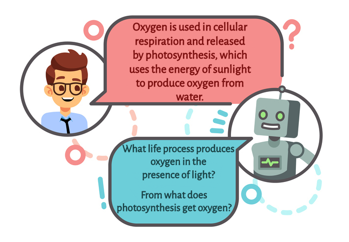
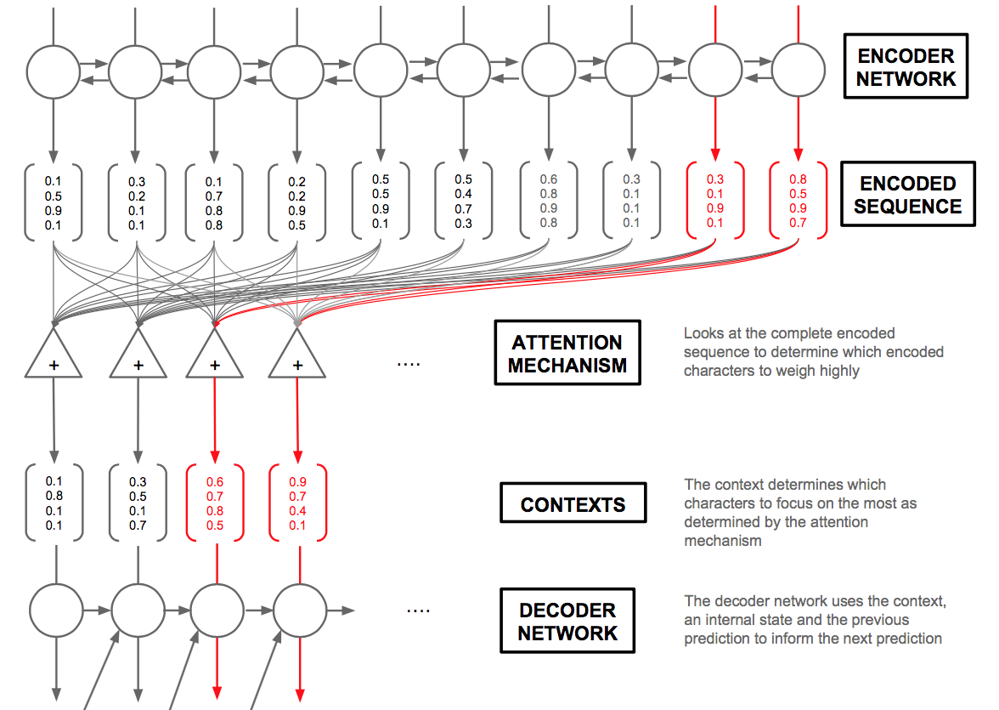

Ask Me!
Pramodith B, Saatchi B, Tanmay BFall 2018 CS 4803 / 7643 Deep Learning: Class Project
Georgia Tech
Github Project
Abstract
Our goal is to create an agent that could learn to ask a question provided an informative sentence. Such an agent could be used for creating chatbots, conversational agents, and agents that help in reading comprehension to name a few. We used a Sequence to Sequence Deep Neural Net architecture powered by Global Attention. This architecture allows us to focus on different parts of the input sentence and determine how important each word in the sentence is to the next predicted word. We were successful in overfitting the model on a small dataset, showing us that our model was working as intended, but the difficulty in tuning hyperparameters and learning on the entire dataset was considerable. The ultimate performance we achieved on test set after the model had been trained on the entire dataset was far from ideal.

Introduction
What did you try to do? What problem did you try to solve? Articulate your objectives using absolutely no jargon.
We attempt to create an AI agent that can read a passage and ask a question that contains an answer in the provided passage. The problem has applications in various domains including generating educational materials, testing someone’s understanding of passages, and in furthering current work on chatbots. An AI agent that can tackle this problem can aid readers in improving their understanding and retention of the material.How is it done today, and what are the limits of current practice?
Prior to the advances of deep learning methods, question generation was primarily tackled using rule-based approaches. These approaches require advanced linguistic knowledge and depend heavily on well-designed transformation rules to transform a declarative sentence into an interrogative question. In addition, it is difficult for rule based approaches to scale to new types of sentences. More recently neural network based techniques (such as Seq2Seq) have outperformed rule-based methods for question generation, but the field is just emerging, and these models still have limitations. These models suffer from word-repetition problems, rare-word problems, and require a great deal of fine-tuning and computational power to train properly. Even after rigorous training, the models lack enough generalizability across multiple domains.Who cares? If you are successful, what difference will it make?
Question Generation using Deep Learning is a difficult problem that has not been addressed extensively. Therefore, any experiments or progress that we are able to make in this problem space is useful to the Deep Learning and Natural Language processing communities. Solving the problem of question generation has the potential to improve conversational AI, assist teachers in developing educational materials, and broadly help with the development of annotated datasets for NLP research in reading comprehension and question answering.Approach
What did you do exactly? How did you solve the problem? Why did you think it would be successful? Is anything new in your approach?
Datasets
- Squad: We used Stanford’s SQUAD dataset which is a collection of excerpts from Wikipedia. Each paragraph contains a human annotated question and an answer corresponding to the question. The dataset contains over 87000 such (question, answer, paragraphs) triples.
- GloVe: We choose word embedding of 300 dimensions and use the glove.840B.300d pre-trained embeddings (Pennington et al., 2014) for initialization.
Model
Our model architecture is based on Learning to Ask: Neural Question Generation for Reading Comprehension. The model is based on the Sequence to Sequence Model by Sutskevar et al and consists of the following modules:- Encoder Module: This module is responsible for converting the input sentence into a context embedding. A bidirectional LSTM with dropout was the main component of the encoder.
- Decoder Module: This module is responsible for predicting the words that form the question. It makes use of the attention weights along with the output of the encoder at each time step to determine the predicted output word. The decoder model primarily consists of a multi layered LSTM with dropout.
- Global Attention Module: This module determines the importance for each part of the input sentence relevant to every word predicted by the decoder module. The output of the attention model is a Tensor that weighs each word in the input sentence according to its importance to the word being predicted.

Bidirectional Sequence to Sequence Model with Global Attention [Image Source]
Inference
We made use of greedy search where the word with the highest probability is chosen as the output word.What problems did you anticipate? What problems did you encounter? Did the very first thing you tried work?
Creating Batches: Many tutorials we referenced were not creating batches for language tasks that involved Seq2Seq models. Given the size of our dataset we anticipated that training the model will take an extremely long time if we didn’t employ batching. Figuring out how best to batch our data was a problem that we encountered. Batching in NLP tasks is tough due to the fact that sentences in a given batch can have different lengths, whereas the model requires a fixed sequence length in the batch. One approach to address this issue is to pick the length of the batch as the length of the longest sentence in the batch and pad the other sentences with some fixed arbitrarily chosen string. However, using this method, we had to account for the fact that gradients are computed and a forward pass is made on these irrelevant tokens which leads to erroneous gradient updates.Solution: We created a custom collate function that aggregates and pads the sentences in the batch with a
Biasing the model: We initially believed that the dataset might be too large to train on. So we decided to subsample the dataset and hoped that the subsample would be diverse enough for the model to generalize well. However it turned out that the way we selected the sample tended to bias the model to learn about certain topics in the dataset like the NFL and this prevented it from generalizing well.
We later decided that it would be best to train the model on the entire dataset so that it can learn information about all the relevant topics present in the SQuAD dataset.
Difficulty in training: We hadn’t expected it to be tough to train the model as we had access to GPUs, but as we progressed we found it extremely difficult to train the model in a manner that ensured a stable decrease in loss.
We conducted many experiments to verify the validity of the model and tune the model parameters, and we will list a few of the experiments we conducted in the next section. We started by using the parameters suggested by the paper.Yet we had conduct a lot of experiments even to understand where the main point of failure of the model was since in our initial runs the models was learning to just predict the < START> token all of the time. Even after improving our model from this point, we continued to run into issues, which took a lot of time debugging.
Experiments and Results
How did you measure success? What experiments were used? What were the results, both quantitative and qualitative? Did you succeed? Did you fail? Why?
We used the BLEU score to evaluate our results, along with eyeballing the output to verify if the questions generated made sense or had any resemblance of a question. BLEU score evaluates a sentence compared to a ground truth based on the ratio of matching n-grams. We computed this metric across our entire test dataset, by comparing each ground-truth question to our generated question.Experiments
Training with teacher forcing: Initially we trained our model using teacher forcing. We observed that the training loss values decreased over time and hoped that this indicated that the model was performing well. But when we used the model to predict sentences on the test set we observed that the model had only learnt to output the < START> or < END> token all the time. To make sense of this we checked the model’s predicted outputs on the training set. Here we observed that the model predicted the right word only if the corresponding ground truth word was passed in as input (teacher forcing). As a consequence when the model predicts even one word wrong, the input to the next cell is different from what it trained on leading to erroneous results. This seemed to cause a cascading effect in the prediction error and showed us that the model was not generalizing well when we employed teacher forcing.We trained the model using the decoder’s previous cells output as the input to the next cell: Our initial model was based on the architecture described by Xinya et al paper, however our results continued to be poor even with extensive hyperparameter tuning. We decided it would be good if we can verify that the model overfits on a small dataset. This was to ensure that we could actually learn what we hoped to, and see if something was perhaps wrong with our model. We sampled from the dataset and trained on a 1000 example training set. We then evaluated our model on the overfit dataset to check if the predictions made sense.
Training on the entire dataset: On training on the entire dataset we observed that the model was highly unstable. The loss curves obtained weren't as smooth as expected and based on a cursory qualitative analysis, the results weren’t very promising. The predictions made no sense both in terms of grammar and tokens. Often, the model predicted the same word all the time so we conducted the following hyper parameter tuning experiments:
- Trying different learning rates ranging from 1.0 to 1e-8
- Trying different optimizers like SGD, Adam, RMSProp, Adamax
- Gradient clipping
- Learning rate decay
- Changing the vocabulary size
- Adding multiple layers to the LSTM
- Trying different methods of the Luong et al Global Attention. We tried calculating the score vector using the dot and concat techniques. Calculation of the attentional vector and experimenting with the number of linear layers, or using the ReLU operation
Observations
- We observed that a learning rate between 1e-4 and 1e-6 lead to stable learning though the losses didn’t drop as drastically as expected
- RMSProp and Adam worked best for our models
- The presence or absence of gradient clipping, and learning rate decay didn’t seem to make much of a difference
- Adding a two layered decoder seemed to give us slightly more meaningful output sentences
- Different attention techniques didn’t appear to have much of an impact
Attention Visualization
This is a closer look at the attention visualization(overfit on a small dataset). The y-axes are the predicted output, and x-axes are the source sentence given. Here, lighter colors represent higher attention weights.
 Ground Truth: What thriller film did beyonce star in?
Ground Truth: What thriller film did beyonce star in?
Predicted Question: What thriller film did beyonce star in?
Interpretation: As this is from our overfit model, it is not surprising that the predicted output matches the ground-truth exactly. In observing the attention, we see the range of weights over each word in the source sentence for each predicted word on the y-axis. A couple key points stand out. The model learns a high weight association between “film” and “obsessed” which is interesting, as “obsessed” is the name of the film in this context. We also see high attention weights between “beyonce” and “starred,” since Beyonce starred in the film. These attention weights provide us a little bit more insight into what the model is using to help with predicting.
 Ground Truth: How does alice jones describe her?
Ground Truth: How does alice jones describe her?
Predicted Question: What does Alice Jones descrive her?
Interpretation: Here there is a slight difference in predicted output: the true value is “How does alice jones describe her” whereas the predicted output is “What does alice jones describe her.” This is not surprising, as the “what” question word may have higher probability to start sentences. However it is interesting, that even when the prediction starts off incorrectly, the model is still able to correctly predict the remaining words in the question, and still output a cohesive question. The attention weights here are difficult to interpret as the source sentence is extremely long, and it looks like there is an incorrect strong weight association between Alice Jones and Barbara Ellen. Due to the convoluted visualization, it is difficult for us to understand the influence on predictions and why the output might be good
- Sentence: his book evolution and dogma (1896) defended certain aspects of evolutionary theory as true and argued moreover that even the great church teachers thomas aquinas and augustine taught something like it
- Ground Truth Question: what book did john zahm write in 1896?
- Predicted Question: what book did john of write in 1896
- Sentence: hesburgh library completed in 1963 which is the third building to house the main collection of books
- Ground Truth Question: in what year was the theodore m hesburgh library at notre dame finished ?
- Predicted Question:in what year was the theodore m hesburgh library at notre dame finished ?
Results
Our results on the complete SQuAD Dataset are as follows:
Train BLEU-1 Score: 0.26
Test BLEU-1 Score: 0.18
We wouldn’t say that this is a success but the outputted language had the structure of a question to some extent, and the model learnt some of the nouns and words from the input sentence. Here are some sample output questions on the test set:
- Sentence: john's cathedral century the temple is a typical example of the so-called gothic style
- Ground Truth Question: What is st john's cathedral an example of?
- Predicted Question: What is the cathedral george's the dedicated cathedral
- Sentence: According to the 1901 census out of inhabitants 56
- Ground Truth Question: What was population in 1901?
- Predicted Question: What percent of the population of in in?
- Sentence: as this was the super bowl the league emphasized the with various initiatives as well as temporarily the tradition of naming each super bowl game with roman (under which the game would have been known as bowl so that the logo could prominently feature the arabic 50
- Ground Truth Question: What was the theme of super bowl 50
- Predicted Question: What team the title title the the the the
As you can see the network learns to predict a question word at the beginning and tends to draw some relevant nouns from the input sentence, but overall it’s not that great.
Details
What was the structure of your problem? How did the structure of your model reflect the structure of your problem?
Question generation can be thought of as reading a sentence/paragraph and transforming declarative sentences into interrogative ones. The structure of the problem lies in identifying declarative sentences and extracting key words that can be formed into a natural question. A human is able to understand the context of the words and naturally form a question based on understanding the relationship between words and identifying which words are key. The structure of our model as a seq2seq model with attention reflects the structure of the problem, as we are encoding the sentence to capture this context, and learning attention weights that identify which words in the context are most important for predicting the next word. In language it is also quite natural for words to depend on their neighbouring words, and when we are completing a sentence we often take into consideration the previous words that we have written.
The use of a bidirectional LSTM in the encoder let’s us take into consideration the dependency between words surrounding the current word in both directions. The use of an LSTM in the decoder layer takes as input the word predicted by the previous LSTM node.
The encoder is responsible for creating a context vector ie a representation of the input sentence that is supposed to learn the key concepts or an overall gist of the statement. The attention module is responsible for finding out which parts of the context vector generated by the encoder are relevant to the current word that is about to be predicted, the decoder actually generates the question based on the previous output word and the attention vector.
What parts of your model had learned parameters (e.g., convolution layers) and what parts did not (e.g., post-processing classifier probabilities into decisions)?
Our entire model was trained end to end. However since we used pre-trained glove embeddings we decided to freeze the weights for the embedding layer.so the weights for the embedding layer were no longer learnt.
The list of learned parameters were:
LSTMs in both the encoder and decoder.
Linear layers in the attention module, decoder.
The final scores were converted to log probabilities in the decoder end and the we also converted the attention scores into probabilities using the Softmax layer.
What representations of input and output did the neural network expect? How was the data pre/post-processed?
Representation of input and output:
We divided the vocabulary of our corpus into 2 parts:
- Vocabulary of the Input Sentences.
- Vocabulary of the ground truth questions being asked.
We pruned the sizes to the 45000 most frequent words for the input sentences and 18000 most frequent for the questions. Each of these vocabularies had a unique word to index mapping. The Tensor of the mapped indices of the statements are passed as input to the encoder and the ground truth predicts indices that map to the words in the vocabulary of questions.
Pre-processing
We had to extract the sentence that contained the response to the generated question from it’s corresponding paragraph in the SQUAD dataset. So preprocessing consisted of actually parsing the paragraphs in the SQUAD dataset to extract the right sentences. Our final dataset was simply the sentence, question pairs after preprocessing.
As mentioned earlier the vocabulary had to be pruned, thus we also needed to create a Tensor of the glove embeddings corresponding to the words present in the vocabulary of the sentences and questions.
We created Pytorch DataLoaders and dataset instances to create mini batches effectively.
Post-processing
This involved mapping the predicted indices back to their respective words.
What was the loss function?
We use the Cross Entropy function to model the loss.
Did the model overfit? How well did the approach generalize?
We overfit the model on a sub-sample of the training set. We were not able to overfit on the entire dataset either. The model could not generalize on the test set..The model predictions were biased towards the topics(words) from the training set.
What hyperparameters did the model have? How were they chosen? How did they affect performance? What optimizer was used?
Hyperparameters:
- Learning Rate and Momentum: As expected, the training procedure was highly sensitive to the values chosen. The safe region for learning rate was 1e-3 and 1e-5, outside of which the training curves were highly spiked.
- Dropout: We fixed the value at 0.3.
- Number of Hidden layers in the Encoder and Decoder LSTMs: Increasing the number of hidden layers in the encoder did not affect accuracy, but increasing the number of layers in the decoder did improve the accuracy.
What Deep Learning framework did you use?
We used Pytorch for modelling and Google Colab as servers to train our models and one of the GT servers that a team member had access to.
What existing code or models did you start with and what did those starting points provide?
We started with the architecture suggested by Xinya et al in Learning to Ask: Neural Question Generation for Reading Comprehension. This provided us with information regarding a model that worked for them for question generation along with details regarding training time and hyperparameters. We did not start with any code, but referenced other Seq2Seq models available online. However our task and attention mechanism was different, so a majority was implemented from scratch. The starting points gave us a good idea of what the general model for the task should look like. They also suggested a set of hyper-parameters that they claimed to be successful for them but these hyper-parameters didn’t work well for us. We also made use of pretrained glove word embeddings and nltk’s implementation of BLEU score calculation.
References
- Seq2Seq
- SQuAD Dataset
- GloVe
- Learning to Ask: Neural Question Generation for Reading Comprehension
- Seq2seq with attention Image
- Effective Approaches to Attention-based Neural Machine Translation
- Pytorch
- Google Colab
- Github
Ground Truth: What thriller film did beyonce star in?
Predicted Question: What thriller film did beyonce star in?
Predicted Question: What thriller film did beyonce star in?
Ground Truth: How does alice jones describe her?
Predicted Question: What does Alice Jones descrive her?
Predicted Question: What does Alice Jones descrive her?